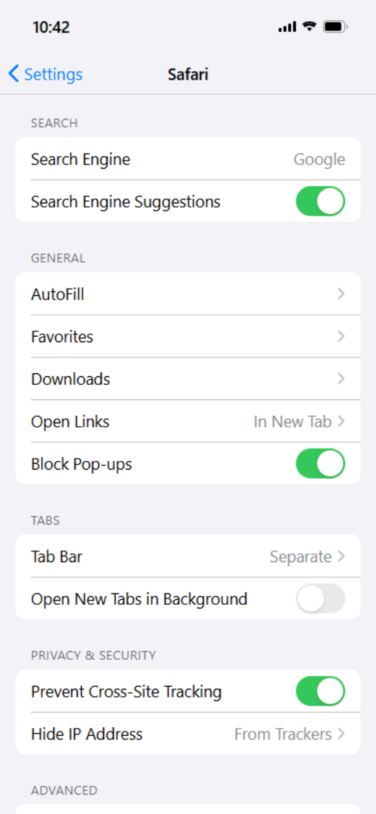

People use the same words for all of them, so it is worth separating them before touching a setting:
- A window that opens by itself. A new tab, usually carrying an ad or a fake prize. This is what Safari’s own pop-up blocker is for.
- A box drawn on top of the page. The newsletter prompt, the “10% off” panel, the full-screen consent wall. It has no window and no address of its own — it is part of the page.
- A tap that leaves the page. The App Store opening on its own, or a tab you did not mean to open because an invisible layer sat over the article.
The first kind is a Safari problem. The second is where most of the annoyance on an iPhone actually lives, and Safari’s blocker never sees it. The third is partly both.
Step 1 — make sure Safari’s own blocker is on
This costs ten seconds and settles the simplest cases:
- Open Settings, scroll to Safari.
- Make sure Block Pop-ups is on.

On a Mac it lives in Safari → Settings (⌘,) → Websites → Pop-up Windows, set to Block.
What this setting does is refuse new windows. What it cannot do is hide an element that the page has already decided to draw — and it cannot stop a tap from opening a tab, because that is a real tap on a real target.
The short version: Safari’s Block Pop-ups catches windows. Turning on Block Pop-ups in AdFence catches the boxes drawn inside the page — which is where nearly all of them come from.
Step 2 — understand why the overlay survived
An overlay is not a window. It is a piece of the page placed on top of everything else: the article is still underneath it, still loaded, just covered. Safari’s pop-up blocker is a rule about opening windows, so it has nothing to act on here.
There are two ways to get rid of one, and a content blocker uses both. It can stop the script that builds the overlay from loading at all, and it can hide the element with CSS once it appears. AdFence’s own switch for this is labelled Block Pop-ups, and its subtitle is literal about the two halves: it blocks pop-up windows and floating pop-ups.
Step 3 — turn it on
The extension has to be enabled in Safari once, the same way any content blocker does. That is a separate switch from the one below and you only do it once per device — the step-by-step guide walks through it.
- Open the AdFence app.
- On the General tab, scroll to Other Settings.
- Turn on Block Pop-ups.
- Go back to Safari and reload the page.

Reloading matters. A page that is already on screen keeps whatever it fetched before the extension was running, so a switch turned on afterwards does nothing until the page is fetched again. On the iPhone, pull down on the page; on the Mac, ⌘R.
Every switch in that list is independent. Turning on Block Pop-ups does not turn on ad blocking, and hiding cookie notices does not commit you to anything else — which is the point of splitting them up.
Step 4 — the “please turn off your ad blocker” wall
This is a pop-up in the other direction: the site has noticed a blocker and put a panel in front of the article until you disable it. Blocking it with a CSS rule works until the site renames the element, which is why it needs its own setting.
Bypass Anti-Adblock, on the same General tab under Blocking List, does two things: it counters the detection script, and it hides the wall those sites put up. Turn it on if the pattern you keep meeting is a blank page with a “we noticed you’re using an ad blocker” message rather than an ad.
If one site still shows one
Take these in order — the first two cost nothing:
- Reload the page properly. Half of “it didn’t work” is a page fetched before the switch was on.
- Try Reader. In Safari’s address bar, tap the aA menu and choose Show Reader. On an article page this strips most overlays at once, with no settings involved. It is the best fallback on a site you visit once.
- Override one filter for one site. In AdFence’s Custom tab, Site Overrides lets a single filter through for that address only. Use it the other way round too: if a page is covered by a blank layer after blocking, the site is waiting for a box that never appeared.
- Pause that site. Site Settings → Pause Blocking stands AdFence down for one address and leaves everything else alone. It brings the pop-up back, so treat it as the last resort, not the first.
What nothing can block
It is worth being straight about the edges, because the ad industry’s whole direction is to move into them:
- Safari’s own prompts. The location, camera, microphone and notification dialogs are drawn by iOS, not by the page. No content blocker touches them. Decline them — they are usually not the reason you opened the site.
- Pop-ups inside other apps. Links opened from Instagram, Facebook, Gmail or Reddit run in that app’s own browser, which does not support Safari extensions. Open the page in Safari instead.
- A box drawn by the site’s own scripts from its own domain when that pattern is not in a filter list yet. Filter lists ship inside the app and update when the app updates, so the next release is what closes the gap — or a custom rule closes it now.
A content blocker does not look at a page and judge which boxes are annoying. It matches addresses and element patterns it already knows against a list. That is why it is fast and private, and also why it is never quite complete.
How to tell it’s actually running
Open AdFence and tap Plugins. Each extension shows a green Active when Safari reports it enabled, and grey when it does not. Refresh Status asks Safari again. If a row is grey while the switch in Safari looks on, the app is reading a stale answer — refresh before changing anything.
One last check: the master Blocking switch at the top of the General tab. While it is off, every extension loads an empty rule list, so nothing is blocked anywhere however the rest of the app is set.
Frequently asked questions
Does this block pop-ups in Chrome or Firefox on the iPhone?
No. Content blockers on iOS are Safari extensions, and only Safari runs them. Chrome and Firefox on the iPhone draw their own pages and ignore Safari’s extension list entirely.
Why does a site still show a pop-up after I turned the switch on?
Two usual reasons: the page was already loaded before the extension started, so it needs a reload; or the box comes from the site’s own domain and is not in a filter list yet. Reload first, then use Site Overrides or a custom rule for that one site.
Will blocking pop-ups break a website?
Occasionally. Some sites lock scrolling until their newsletter box is dismissed, and if the box never appears the page can feel stuck. Use Pause Blocking for that one site — the other sites keep the setting.
Does it work on the Mac as well?
Yes — same app, same switch. Enable the AdFence extensions once in Safari → Settings → Extensions on the Mac, then turn on Block Pop-ups in the app’s General tab.